Conhecer.
Treinar.
Inspirar.
O site da formação está pronto. Para colocar no ar, falta a Nine nos passar as informações, os arquivos e as decisões desta lista. Pode responder na ordem, e aos poucos.
Marque o que já enviou. · Nenhum valor aparece no site. · Atualizado em 12/11/2026.
E-mail, planilha ou WhatsApp, e quem responde as pessoas.
Qual será o endereço (por exemplo, 9ai.com.br). Precisamos dele para acertar o link e a imagem que aparecem quando o site é compartilhado.
Texto completo e o nome de quem responde pelos dados na Nine.
Nome oficial, texto da faixa azul do topo, para onde ela leva (página, formulário ou WhatsApp), datas e se já tem inscrição aberta.
Também para colocar no ar
O Nine Legacy não aparece no site porque não recebemos nenhuma informação sobre ele. Para decidir onde e como mostrar, responda o que puder:
Ano, data de início, prazo de inscrição e número de vagas (só se for divulgar). Hoje o calendário do site é o da turma 2026.
Lemos do gráfico do Manual: intensivos em março, maio, julho e setembro; Paths I de março a julho, II em agosto, III de setembro a novembro; TCC em novembro; formatura em dezembro. Está certo?
Idade mínima, se precisa ser de alguma igreja e se o curso é aberto a quem não é cristão.
A Apresentação fala em 4 certificados e lista 3 (Nine, Fatemi e History Makers). Qual é o quarto, ou são 3?
O site diz que a Nine recebe alunos de outras cidades e que a hospedagem depende de vagas. Pode manter?
Nome, cargo e foto de coordenadores, tutores e professores que a Nine quiser destacar. A seção só entra com informação real.
contato@9ai.com.br e secretaria@9ai.com.br estão ativas? Quem acompanha?
Dos intensivos, da estrutura e dos depoimentos (hoje são recortes da apresentação) e 30 a 60 fotos do dia a dia, separadas por aulas, oficinas, grupos, intercâmbio, jantares, serviço e formatura.
Nine nas versões azul e branca, o símbolo oficial do curso de IA e o padrão de coroas.
Reels no arquivo original, não baixados do Instagram, e vídeos brutos para o topo do site.
Vídeo curto na vertical ou texto com foto e nome. Só o que o aluno disser.